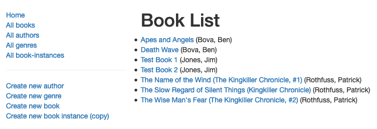

Next we'll implement our book list page. This page needs to display a list of all books in the database along with their author, with each book title being a hyperlink to its associated book detail page.
The book list controller function needs to get a list of all Book objects in the database, and then pass these to the template for rendering.
Open /controllers/bookController.js. Find the exported book_list() controller method and replace it with the following code.
// Display list of all Books.
exports.book_list = function(req, res, next) {
Book.find({}, 'title author')
.populate('author')
.exec(function (err, list_books) {
if (err) { return next(err); }
//Successful, so render
res.render('book_list', { title: 'Book List', book_list: list_books });
});
};
The method uses the model's find() function to return all Book objects, selecting to return only the title and author as we don't need the other fields (it will also return the _id and virtual fields). Here we also call populate() on Book, specifying the author field—this will replace the stored book author id with the full author details.
On success, the callback passed to the query renders the book_list(.pug) template, passing the title and book_list (list of books with authors) as variables.
Create /views/book_list.pug and copy in the text below.
extends layout
block content
h1= title
ul
- book_list.sort(function(a, b) {let textA = a.title.toUpperCase(); let textB = b.title.toUpperCase(); return (textA < textB) ? -1 : (textA > textB) ? 1 : 0;});
each book in book_list
li
a(href=book.url) #{book.title}
| (#{book.author.name})
else
li There are no books.
The view extends the layout.pug base template and overrides the block named 'content'. The book_list is first sorted alphabetically with the inline JavaScript array.sort() function. It then displays the title we passed in from the controller (via the render() method) and iterates through the book_list variable using the each-in-else syntax. A list item is created for each book displaying the book title as a link to the book's detail page followed by the author name. If there are no books in the book_list then the else clause is executed, and displays the text 'There are no books.'
Note: We use book.url to provide the link to the detail record for each book (we've implemented this route, but not the page yet). This is a virtual property of the Book model which uses the model instance's _id field to produce a unique URL path.
Of interest here is that each book is defined as two lines, using the pipe for the second line. This approach is needed because if the author name were on the previous line then it would be part of the hyperlink.
Run the application (see Testing the routes for the relevant commands) and open your browser to http://localhost:3000/. Then select the All books link. If everything is set up correctly, your site should look something like the following screenshot.
